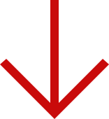

Поэтому в библиотеках Ленинского района в 2020 году продолжается акция «Подари библиотеке книгу». Если у вас дома есть прочитанные книги
в хорошем состоянии – Вы можете подарить их библиотеке.
Библиотека с благодарностью примет литературу. И книга еще раз сможет порадовать нового читателя. Акция направлена на то, чтобы пополнить фонд необходимой литературой для любителей чтения. Те, кто передает бесплатно книги в фонд библиотеки, — люди с активной гражданской позицией, чувством долга перед обществом, как правило, прекрасно понимающие, что эти книги найдут своего читателя. Все подаренные книги будут поставлены на учет, а в библиотеке пройдут выставки подаренной литературы.
Ваши книги будут рады принять в любой из 13-ти библиотек ЦБС Ленинского района.

Филиал им. Ф. Э. Дзержинского
ул. Гл. Успенского, 4/4
пн-пт с 11:00 до 19:00
вс с 11:00 до 19:00
258 - 28 - 00
dzerjins-bib@yandex.ru
Филиал им. С. Я. Маршака
ул. Адмирала Макарова,6
пн-пт с 11:00 до 17:00
сб с 11:00 до 17:00
251 - 82 - 11
marshakblok@yandex.ru
Филиал им. М. И. Цветаевой
пр. Ленина, д.58
пн-пт с 11:00 до 18:00
сб с 11:00 до 18:00
250 - 40 - 16
svetaevaf@yandex.ru
ЦДБ им. А. В. Кольцова
ул. Премудрова, 10
пн-пт с 11:00 до 18:00
сб с 11:00 до 18:00
244 - 28 - 32
kolcov-bibl@yandex.ru
Филиал им. А. А. Ахматовой
пр. Ленина, 91
пн-пт с 11:00 до 19:00
вс с 11:00 до 19:00
244 - 94 - 82
ahmatovabib@yandex.ru
БИДЦ им. К. Г. Паустовского
ул. Грекова, 9
пн-пт с 11:00 до 18:00
вс с 11:00 до 18:00
258 - 40 - 78
paustovsk@yandex.ru
Филиал им. Н. А. Некрасова
ул. Каховская, 1
пн-пт с 11:00 до 17:00
вс с 11:00 до 17:00
250 - 47 - 47
anutade@rambler.ru
Филиал им. М. М. Пришвина
ул. Гл. Успенского, 17
пн-пт с 11:00 до 17:00
вс с 11:00 до 17:00
258 - 10 - 60
p17mm@yandex.ru
ЦБ им. Д. А. Фурманова
пр. Ленина, 14
пн-пт с 11:00 до 19:00
вс с 11:00 до 19:00
245 - 31 - 84
bibliotekaf@yandex.ru
Краеведческий центр им. П. П. Бажова
ул. Кировская, 16
пн-пт с 11:00 до 18:00
сб с 11:00 до 18:00
244 - 16 - 05
bajovabibl@yandex.ru
Филиал им. А. А. Блока
ул. Адмирала Макарова, 6
пн-пт с 11:00 до 18:00
сб с 11:00 до 18:00
251 - 80 - 13
marshakblok@yandex.ru
Филиал им. В. М. Комарова
ул. Снежная, 25/4
пн-пт с 11:00 до 17:00
вс с 11:00 до 17:00
244 - 07 - 87
komarovabib@yandex.ru